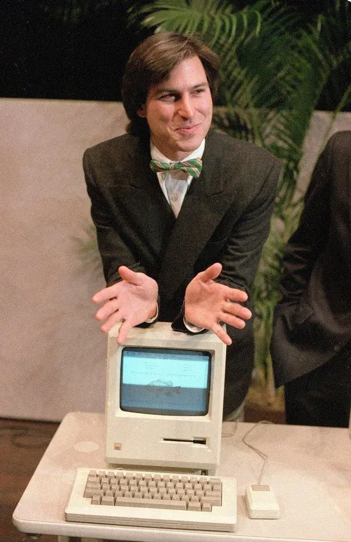
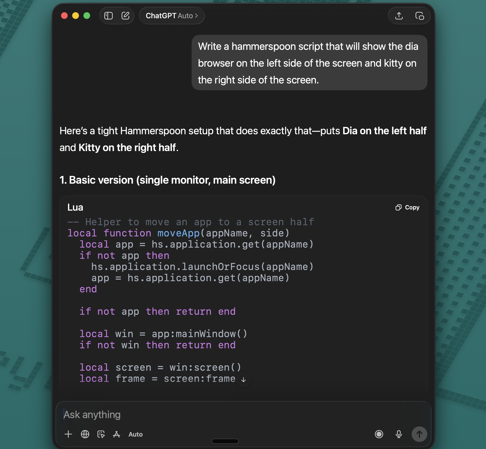
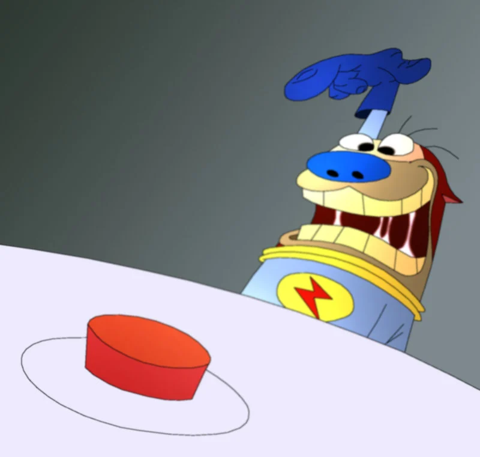
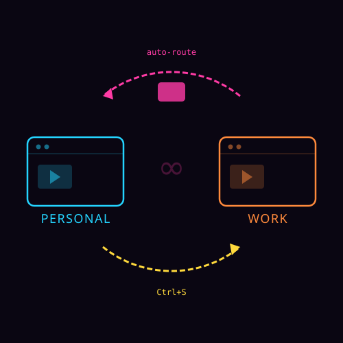
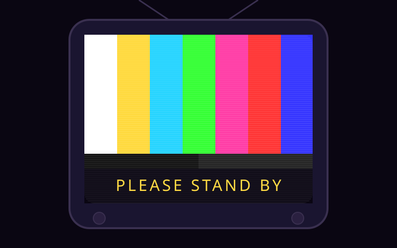
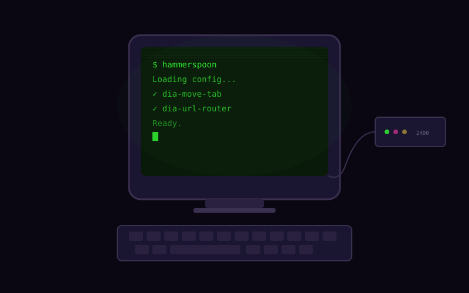
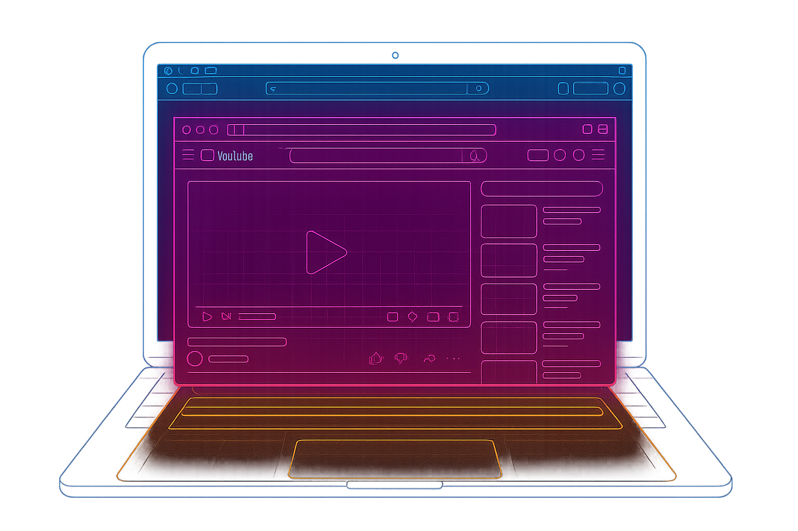
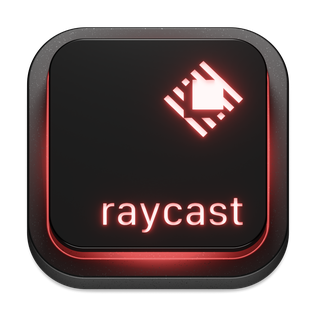

It was dumb. It was beautiful. It gave ordinary people a superpower they didn't know they wanted: control over their environment without getting up from the couch.
Your Mac has a Clapper.
You just don't know about it yet.

The barrier changed.
Your Mac has had a hidden automation layer since 2014. The APIs haven't changed. What changed is that you can describe what you want to Claude or ChatGPT and get working code back.
The barrier was never technical.
It was knowing that this was possible.

The annoying
thing.
The problem nobody sells a solution for.

"I've fallen and I can't get up!"
Two profiles.
Zero routing.
I use Dia browser with two profiles — Personal and Work. Two windows, two sets of logins, two cookie jars.
Except links don't know where they belong. YouTube opens in Work. GitHub opens in Personal. Every day I do the shuffle:
- Copy the URL
- Close the tab
- Click the other window
- Open a new tab
- Paste
- Hit enter
6 steps.
Every time. For the rest of my life.
Or... not.
The tool.
Hammerspoon — The Clapper for your Mac.

"It slices! It dices!"
Hammerspoon
Free, open-source Mac app. Sits in your menu bar. Runs Lua scripts that can talk to your entire operating system — every window, every app, every keystroke.
You don't even need to know the language. Describe what you want to an LLM and get working code back.
brew install hammerspoonEdit ~/.hammerspoon/init.lua → Reload → done.
Three lines. A global Mac hotkey.
hs.hotkey.bind({"ctrl"}, "h", function()
hs.alert.show("Hello from Hammerspoon!")
end)Works in every app. Try doing that in Python.
Your entire Mac.
React when an app launches.
-- When Zoom opens, mute Slack
hs.application.watcher.new(
function(name, event, app)
if name == "zoom.us" and event ==
hs.application.watcher.launched then
hs.notify.new(nil, {
title = "🔕 Meeting mode",
informativeText = "Slack muted",
}):send()
hs.applescript([[
tell application "Slack"
set do not disturb to true
end tell
]])
end
end
):start()
Zoom opens →
Slack goes to Do Not Disturb →
You get a notification confirming it.
No cron job. No polling. The Mac tells you when something happens.
| Python | Hammerspoon | |
|---|---|---|
| Mac integration | subprocess.run(["osascript",...]) |
Native — hs.application, hs.window |
| Runs as | A script you launch | Always-on menu bar daemon |
| Global hotkeys | Can't intercept them | First-class — any key combo, any app |
| App events | You'd poll in a loop | Event-driven watchers |
| Notifications | osascript — no buttons |
Native with action buttons & callbacks |
| Window control | AppleScript subprocess | Move, resize, snap — one line |
| Learning curve | You know it already | Lua — pick it up in an hour |
Neovim ↔ Hammerspoon
NEOVIM
vim.api.nvim_create_autocmd(
"BufWritePre", {
callback = function()
vim.lsp.buf.format()
end,
})HAMMERSPOON
hs.application.watcher.new(
function(name, event, app)
if event == hs.application
.watcher.launched then
hs.alert.show(name)
end
end):start()Same mental model: when this event happens, run this function.
The Clapper.
One keystroke to move a tab between profiles.

"Clap on! clap clap Clap off!"
Ctrl+S
Press it in the browser. The current tab
teleports to the other profile. Under a second.

One keystroke.
Zero manual steps.
The tab closes in Work, opens in Personal — same URL. A native macOS notification confirms where it went.

Chromium ignores synthetic keystrokes.
AppleScript works.
-- Get the URL — no clipboard, just ask
local ok, url = hs.osascript.applescript(
'tell application "Dia" to return URL of active tab of window 1'
)
-- Close the tab
hs.osascript.applescript(
'tell application "Dia" to close active tab of window 1'
)
-- Open in the other profile's window
hs.osascript.applescript(string.format(
'tell application "Dia" to make new tab in window 2 '
.. 'with properties {URL:"%s"}', url
))Three API calls. No timing hacks. The browser cooperates because you're speaking its language.
The autopilot.
Auto-routing tabs by domain.

"Set it and forget it!"
What if the Mac
just... knew?
YouTube → Personal.
Slack → Work.
Amazon → Personal.
GitHub → depends on the repo.

One domain per line. Live reload.
personal.txt
smirk.txt
Same domain.
Different profiles.
The path: prefix matches the URL path —
github.com/Smirk-Health/monorepo
→ Work
github.com/malpern/dotfiles
→ Personal
Save the file, Hammerspoon picks it up instantly.

Don't be annoying
about it.
Cooldowns, overrides, and an undo button.

"But wait, there's more!"
Autopilot vs. you.
You intentionally open YouTube in Work to watch a demo video. The Mac grabs it, throws it to Personal. You Ctrl+S it back. The Mac throws it again.
You're in an argument. With your own computer.

10-minute cooldown.
When you Ctrl+S a tab, the Mac backs off that URL for 10 minutes.
"You clearly want this here. I'll leave it alone."
local COOLDOWN_SECONDS = 600
local recentlyRouted = {}
local function isOnCooldown(url)
local t = recentlyRouted[url]
if not t then return false end
if os.time() - t > COOLDOWN_SECONDS then
recentlyRouted[url] = nil
return false
end
return true
end
-- in the auto-router:
if isOnCooldown(url) then return end
-- when Ctrl+S moves a tab:
markRouted(url) -- starts 10m cooldownOpinionated but not stubborn. The user always wins.

Be kind, rewind.
Preserving YouTube playback position and play state.
"I've fallen... but I remember where I fell."
14 minutes in.
Ctrl+S. Lost.
You're watching a YouTube video. You move it to the other profile. The page reloads from scratch. Your place is gone.
Not anymore.
Same moment.
Still playing.
Before moving, the script reaches inside the page and asks the video player: where are you? Are you playing?
Captures the timestamp, appends &t=855s to the URL,
and presses spacebar after the page loads to resume.
It's dumb. It's beautiful. It's The Clapper.


Under the hood.
Three automation layers, stitched together by a menu-bar daemon and a language you can learn in an afternoon.

Three layers. One script.
Lua · Hammerspoon
Hotkeys, watchers, notifications, orchestration
AppleScript
Talk to apps — get URLs, close tabs, open tabs, send keystrokes
JavaScript
Reach inside the DOM — read video position, play state
The play, broken down.
■ Lua — orchestrator
■ AppleScript — talks to apps
■ JavaScript — inside the DOM
One catch.
Chromium browsers lock down JavaScript execution via AppleScript by default. Dia supports it — but only if you launch with a flag:
--enable-applescript-javascriptThe flag doesn't persist. Every time Dia launches from the Dock, Spotlight, or Finder — it's gone.
Without it, everything else still works. You just lose the YouTube timestamp.
Raycast to the rescue
Dia's JavaScript-via-AppleScript requires a launch flag that doesn't persist. This Raycast script ensures it's always set.
#!/bin/bash
# @raycast.title Dia (scriptable)
# @raycast.mode silent
if pgrep -x "Dia" > /dev/null; then
osascript -e 'tell application "Dia" to activate'
else
/Applications/Dia.app/Contents/MacOS/Dia \
--enable-applescript-javascript &
disown
fi
The full picture.
How it all connects — and what else you can automate.

"Operators are standing by."
- Ctrl+S — moves any tab between profiles in under a second
- YouTube — maintains position and keeps playing
- 80+ domain rules — auto-route tabs as I browse
- Cooldowns — the system backs off when I override it
- Live config — edit a text file, save, done
- Notifications — confirm every action with an undo button
~300 lines of Lua. Two script files. Two text configs. Built in one afternoon with Claude.
Hammerspoon & Lua
The orchestrator — your Mac's nervous system
- Global hotkeys — intercept any key combo, in any app
- App & window watchers — react to launch, quit, focus, title change
- File watchers — live-reload config when you save
- Native notifications — with action buttons and callbacks
- System events — WiFi, USB, screen, battery, sleep/wake
- Window management — move, resize, snap any window
-- React to WiFi changes
hs.wifi.watcher.new(function()
local net = hs.wifi.currentNetwork()
if net == "Office" then
hs.application.open("Slack")
hs.notify.new(nil, {
title = "🏢 Welcome to work",
}):send()
end
end):start()AppleScript
The universal translator — every Mac app speaks it
- Talk to any app — get URLs, titles, tab lists, window state
- Control apps directly — close tabs, open URLs, click menus
- System Events — send keystrokes that feel "real" to apps
- Finder automation — move files, rename, organize
- App-to-app bridges — pass data between apps that don't know each other
-- Get the URL of the current browser tab
tell application "Dia"
return URL of active tab of window 1
end tell
-- Close the tab
tell application "Dia"
close active tab of window 1
end tell
-- Open a URL in a specific window
tell application "Dia"
make new tab in window 2 ¬
with properties {URL:"https://..."}
end tell
-- Send a keystroke (spacebar)
tell application "System Events"
tell process "Dia"
keystroke " "
end tell
end tellJavaScript
The inside agent — reach into any web page
- Read video state — currentTime, paused, duration
- Read page content — titles, text, form values, DOM elements
- Click buttons — simulate user interactions inside the page
- Extract data — scrape structured info from any site
- Modify pages — inject CSS, hide elements, add features
-- Get YouTube video position
execute javascript "
var v = document.querySelector('video');
JSON.stringify({
time: Math.floor(v.currentTime),
paused: v.paused,
duration: Math.floor(v.duration)
})
"
-- Click a button on a web page
execute javascript "
document.querySelector('.submit-btn')
.click()
"
-- Extract the page title
execute javascript "document.title"Better together.
Each layer can't do what the others can. The magic is the nesting.
Lua
Can intercept keystrokes and watch events.
Can't talk to apps or see inside pages.
AppleScript
Can control any Mac app by name.
Can't listen for events or bind hotkeys.
JavaScript
Can read and modify any web page.
Can't reach outside the browser tab.
Lua calls AppleScript calls JavaScript — and suddenly you can do anything.
Getting started.
Step 1: brew install hammerspoon
Step 2: Grant Accessibility permission
Step 3: Edit ~/.hammerspoon/init.lua
That's it. Your Mac is now programmable.
This talk's code: github.com/malpern/hammerspoon
Getting started: hammerspoon.org/go
Clap on.
Clap off.
The Clapper gave people control over their lamps.
Hammerspoon gives you control over your Mac.
The only difference is you don't have to clap.